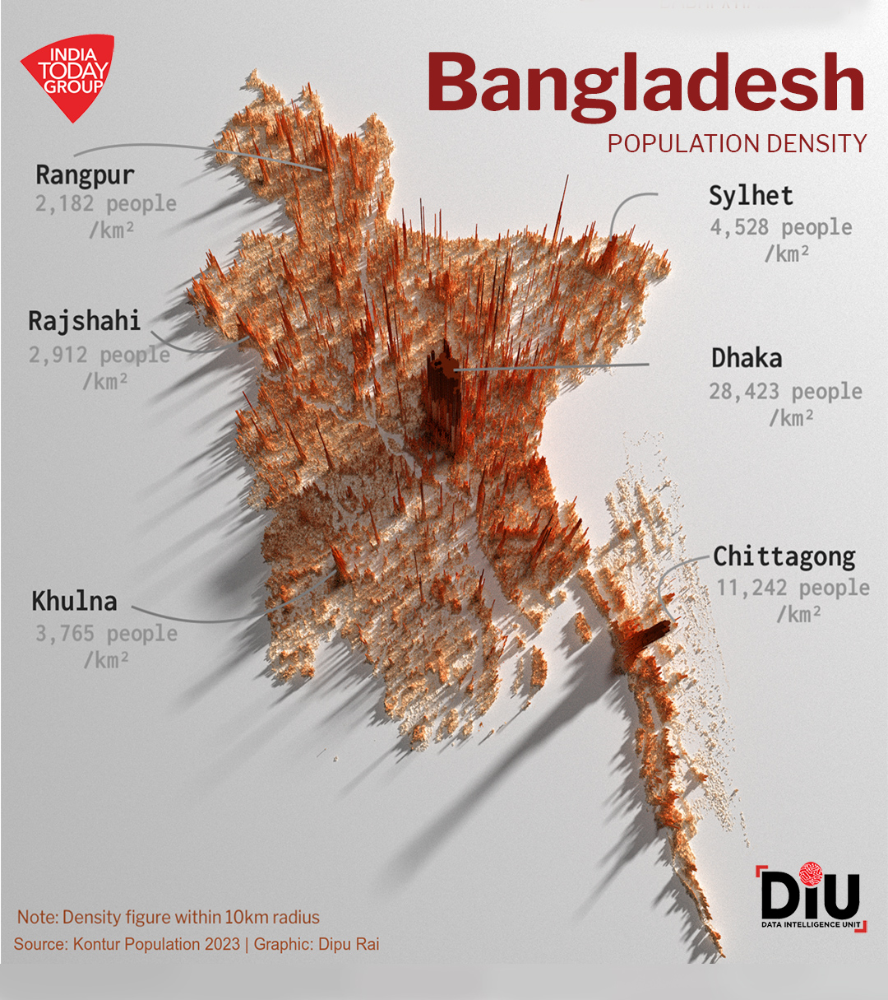
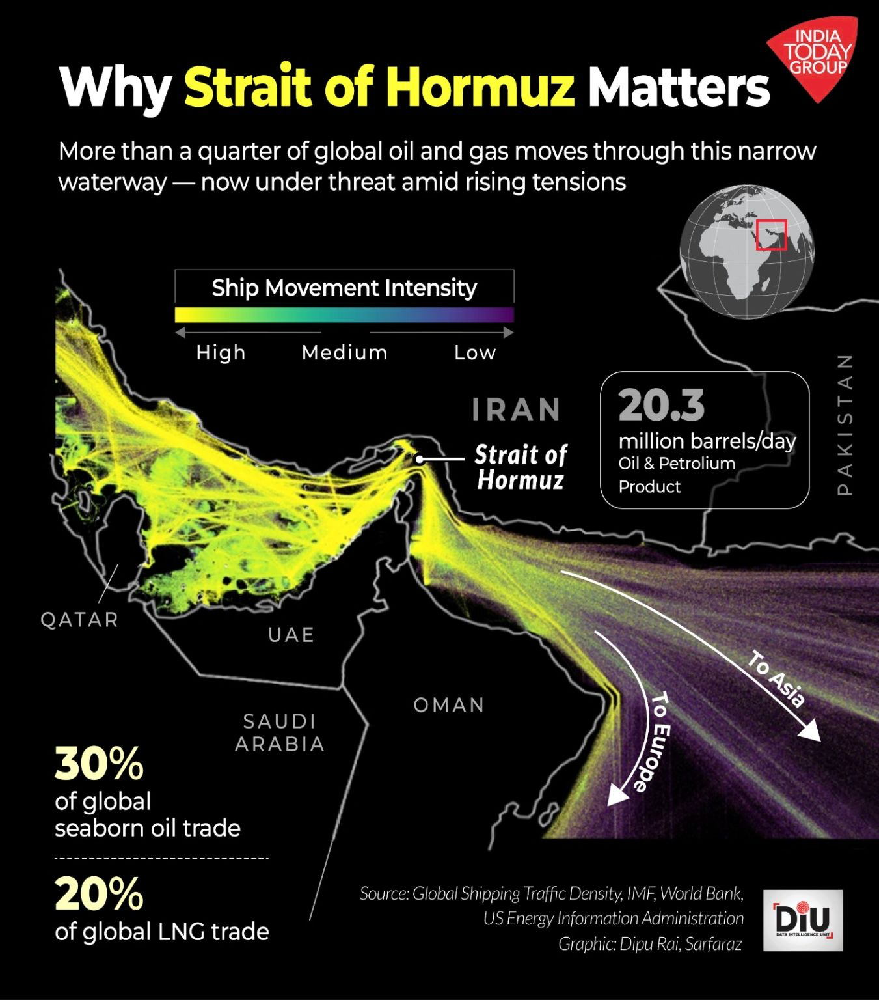
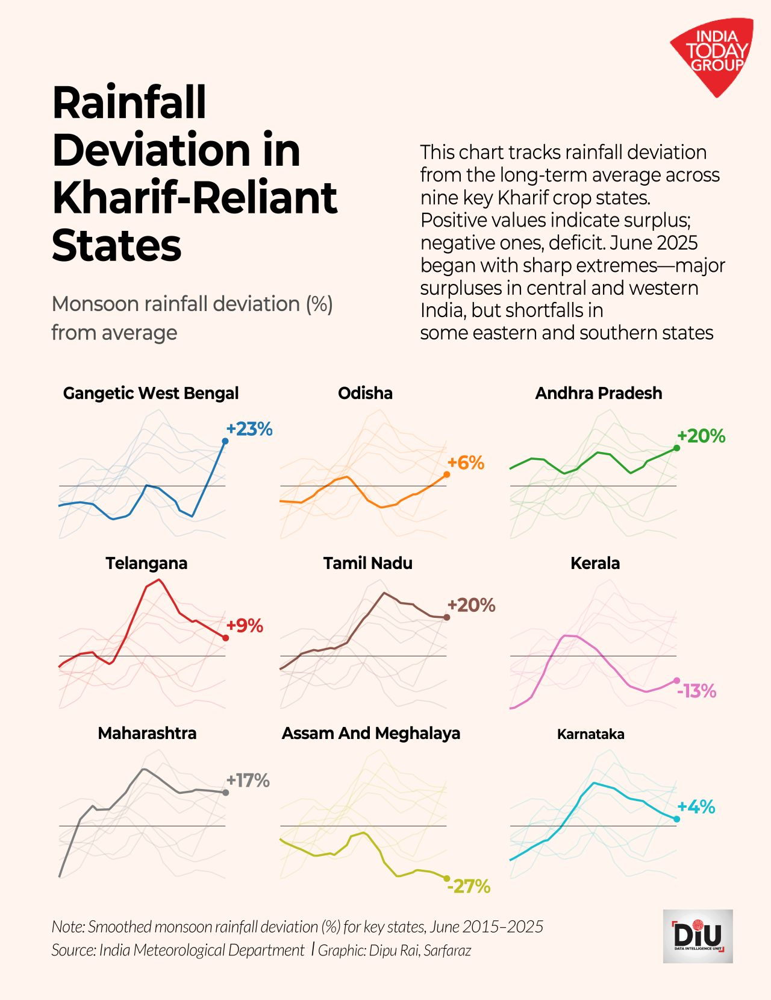
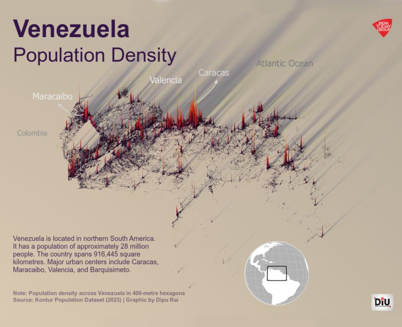
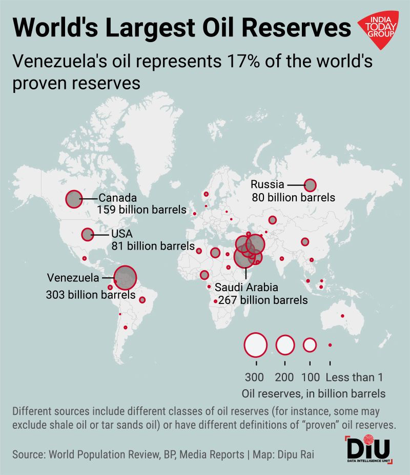
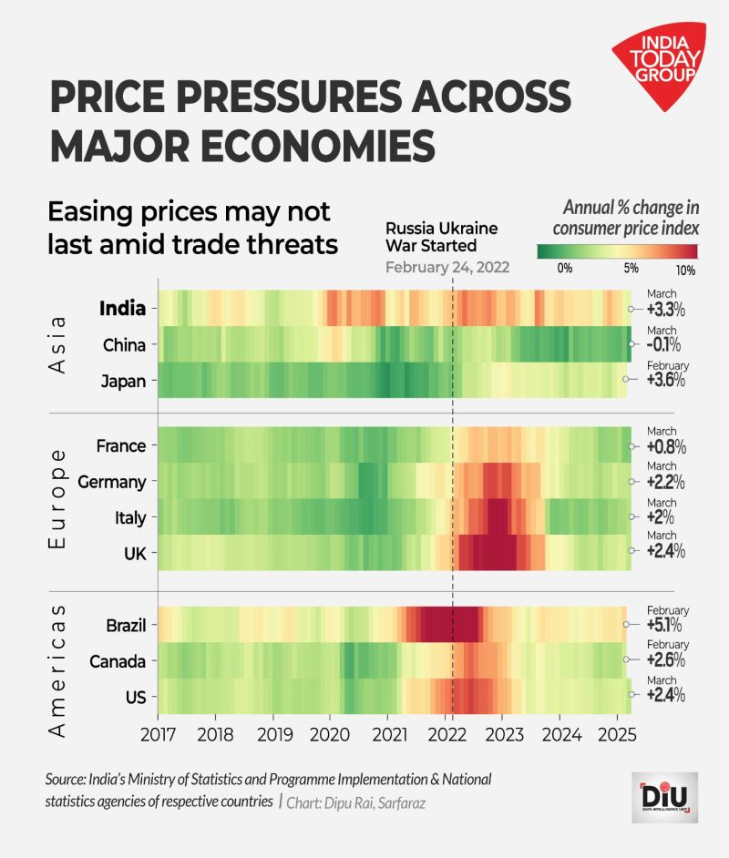

Data Journalism Portfolio
Here are the data visualisation projects I'm most proud of.
These projects demonstrate my expertise in spatial analysis, time series visualisation, and data-driven storytelling.
India Today's Data Intelligence Unit
AI's Global Divide: Wealth and Technology Adoption | January 2026
Analysed global AI adoption patterns using Microsoft data and World Bank statistics, revealing stark disparities between wealthy and developing nations. Created bubble chart and choropleth map showing correlation between GDP per capita and AI usage across 150+ countries.
Tools: Python • Pandas • Altair • Geospatial Analysis
How a Volcano in Ethiopia Sent Sulphur Dioxide to India | November 2025
A massive plume of sulphur dioxide, a chemical signature of volcanic activity, travelled 4,600 kilometres across the Arabian Sea to reach India in just two days, satellite data shows.
Tools: Python • Satellite Data • Animation
Bangladesh's Urban Density Crisis | December 2025
As Bangladesh grapples with a leadership vacuum and rising communal violence, data reveals the scale of urban concentration that shapes daily life: Nearly 9 million people crowd into Dhaka's 10km core, a density rivalling Mumbai that intensifies every social and political challenge.
Why Strait of Hormuz Matters: Global Energy Chokepoint | 2025
Visualised ship movement intensity through the Strait of Hormuz using Global Shipping Traffic Density data. Revealed that 30% of global seaborne oil and 20% of LNG trade flows through this narrow waterway.
Tools: AIS Data • QGIS • Geospatial Analysis
Rainfall Deviation in Kharif-Reliant States | 2025
Tracked monsoon rainfall patterns across nine key agricultural states using IMD data. Applied small multiples technique to reveal regional disparities—major surpluses in West Bengal (+23%) and deficits in Assam-Meghalaya (-27%).
Tools: R • ggplot2 • Time Series Analysis • Climate Data
Gamble on the Rains: Bihar's Back-to-Back Rainfall Swings | 2025
Created 6-year time series of cumulative precipitation anomaly maps (2019-2024) for North Bihar using IMD gridded data. Visualised dramatic year-to-year swings between extreme deficit and surplus.

Tools: R • Spatial Analysis • IMD Data • Small Multiples
Venezuela's Vanishing Population: A Country Hollowed Out | 2025
Mapped Venezuela's demographic collapse through 3D population density visualisation using Kontur Population Dataset. Revealed urban exodus patterns across major cities illustrating the humanitarian crisis.
Tools: QGIS • R • 3D Mapping • Population Data
World's Largest Oil Reserves: The Venezuela Paradox | 2025
Investigated why Venezuela, holding 17% of world's proven oil reserves (303 billion barrels), faces economic collapse. Created proportional symbol map integrating BP data and geopolitical analysis.
Tools: QGIS • Datawrapper • Geospatial Analysis
Price Pressures Across Major Economies | 2025
Tracked consumer price inflation across 10 major economies (2017-2025). Heatmap visualisation clearly demarcates Russia-Ukraine war's impact (February 2022), showing synchronized global price spikes.
Tools: Python • Pandas • Heatmap Visualisation • Economic Data
Expertise Areas
- Climate & Environmental Data Analysis
- Geopolitical & Economic Visualisation
- Spatial Analysis & Mapping
- Time Series & Small Multiples
- 3D Data Visualisation
- Interactive Charts & Dashboards